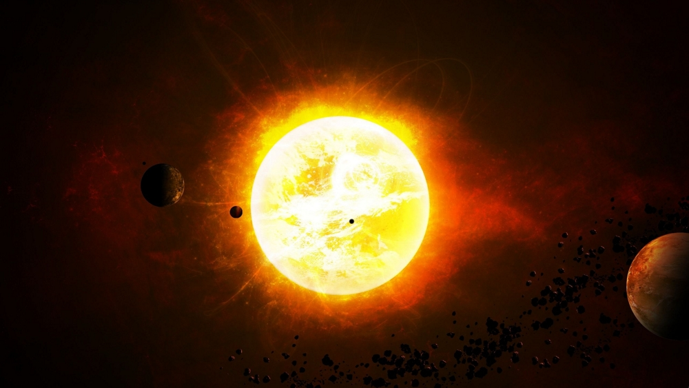

Matahari
Matahari atau Surya adalah bintang di pusat tata surya. Bentuknya nyaris bulat dan terdiri dari plasma panas bercampur medan magnet.Diameternya sekitar 1.392.684 km,kira-kira 109 kali diameter Bumi, dan massanya (sekitar 2×1030 kilogram, 330.000 kali massa Bumi) mewakili kurang lebih 99,86 % massa total tata surya. Matahari terbentuk sekitar 4,6 miliar tahun yang lalu akibat peluruhan gravitasi suatu wilayah di dalam sebuah awan molekul besar. Sebagian besar materi berkumpul di tengah, sementara sisanya memipih menjadi cakram beredar yang kelak menjadi tata surya. Massa pusatnya semakin panas dan padat dan akhirnya memulai fusi termonuklir di intinya. Berdasarkan kelas spektrumnya, adalah bintang deret utama G (G2V). Jarak rata-rata matahari dari Bumi sekitar 149,6 juta kilometer (1 au), meski jaraknya bervariasi seiring pergerakan Bumi menjauhi perihelion pada bulan Januari hingga aphelion pada bulan Juli. Pada jarak rata-rata ini, cahaya bergerak dari matahari ke Bumi selama 8 menit 19 detik. Energi sinar matahari ini membantu perkembangan nyaris semua bentuk kehidupan di Bumi melalui fotosintesis dan mengubah iklim dan cuaca Bumi. Dampak luar biasa matahari terhadap Bumi sudah diamati sejak zaman prasejarah. Matahari juga dianggap oleh sejumlah peradaban sebagai dewa. (wikipedia.com)